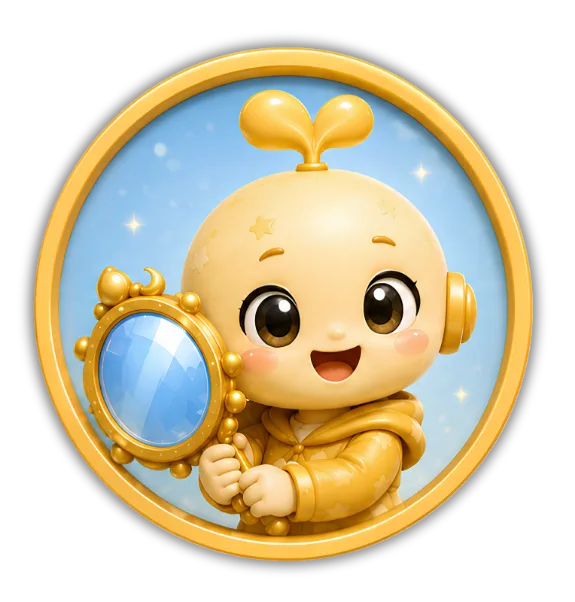

빛의 행성이 어두워졌어!
주민들이 서로의 마음 신호를
알아채지 못해 '이해의 빛'이
점점 사라지고 있어. 친구의
마음을 이해하는 방법을 배우고,
미션을 해결해서 빛의 행성의
밝은 빛을 되찾아 보자!
- ⭐ 공감의 뜻과 공감이 필요한 까닭을 이해한다.
- ⭐ 공감하는 말과 행동이 상황에 따라 다르게 받아들여질 수도 있음을 이해한다.
-
이해의 사파이어 빛의 행성에서 얻는 첫 번째 원석이에요.
-
공감 거울 친구의 마음을 비추어 공감의 말을 만들어줘요.
-
 공감 에너지 경험치 공감 에너지를 모아 레벨을 올릴 수 있어요.
공감 에너지 경험치 공감 에너지를 모아 레벨을 올릴 수 있어요.

사라진 이해의 빛을 찾아라!
친구의 마음을 이해하며 공감의 첫걸음을 시작해 보세요!
- 1 마음 신호 탐색하기
- 2 얼어붙은 공감 거울 깨우기
- 3 공감없는 세상으로